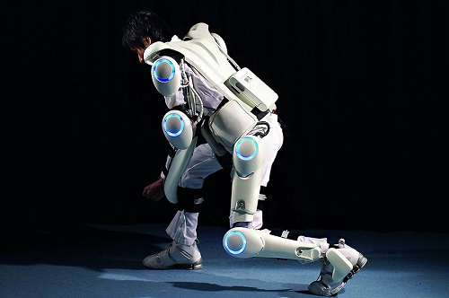

|  |
Японцы, чья поп-культура просто пронизана всевозможными гаджетами и робототехникой, в конце прошлого десятилетия активно приступили к разработкам своего экзоскелета. И первый костюм, представленный ими, получил название «HAL». Он был разработан фирмой Cyberdyne и, в отличие от американского «XOS», считывает сигналы с кожи человека при помощи сенсоров, отправляет их в компьютер, который уже определяет, какие сервоприводы активировать. «HAL» легче американского аналога и питается от подвешенного на поясе аккумулятора на 100 вольт, но физическую силу он увеличивает всего в пять раз.
|